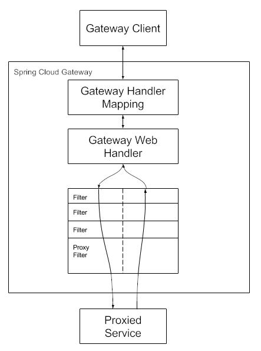

Gateway 网关
1. 路由
1.1 规则配置
配置项
@Validated
public class RouteDefinition {
private String id;
@NotEmpty
@Valid
private List<PredicateDefinition> predicates = new ArrayList<>();
@Valid
private List<FilterDefinition> filters = new ArrayList<>();
@NotNull
private URI uri;
private Map<String, Object> metadata = new HashMap<>();
private int order = 0; // 数字越小优先级越高
// ...
}
yml 配置
spring:
cloud:
gateway:
routes:
- id: order-route
uri: lb://service-order
predicates:
- Path=/api/order/**
- id: product-route
uri: lb://service-product
predicates:
- Path=/api/product/**
1.2 工作原理

2. 断言
2.1 断言工厂
Spring Cloud Gateway 内置多种断言工厂，配置断言提供长短写法，短写法通过位置参数绑定到断言工厂的配置类 Config，长写法是通过显式指定参数名的方式绑定，不同断言工厂配置类设置的参数不同。
spring:
cloud:
gateway:
routes:
- id: test_route
uri: http://example.org
predicates:
- Header=X-Token, .+
spring:
cloud:
gateway:
routes:
- id: test_route
uri: http://example.org
predicates:
- name: Header
args:
header: X-Token
regexp: .+
2.2 自定义断言工厂
工厂名 xxxRoutePredicateFactory 会自动注册成 xxx
@Component
public class MyCustomRoutePredicateFactory extends AbstractRoutePredicateFactory<VipRoutePredicateFactory.Config> {
public MyCustomRoutePredicateFactory() {
super(Config.class);
}
@Override
public Predicate<ServerWebExchange> apply(Config config) {
return new GatewayPredicate() {
@Override
public boolean test(ServerWebExchange serverWebExchange) {
ServerHttpRequest request = serverWebExchange.getRequest();
String first = request.getQueryParams().getFirst(config.param);
return StringUtils.hasText(first) && first.equals(config.value);
}
};
}
@Override
public List<String> shortcutFieldOrder() {
return Arrays.asList("param", "value");
}
@Validated
@Data
public static class Config {
@NotEmpty
private String param;
@NotEmpty
private String value;
}
}
spring:
cloud:
gateway:
routes:
- id: custom_route
uri: http://localhost:8888
predicates:
- MyCustom=user,jack
3. 过滤器
3.1 过滤器工厂
Spring Cloud Gateway 内置多种过滤器工厂
3.2 默认过滤器
使用 spring.cloud.gateway.default-filters 为所有路由添加默认的过滤器
3.3 全局过滤器
@Slf4j
@Component
public class CustomGlobalFilter implements GlobalFilter, Ordered {
// 响应式异步
@Override
public Mono<Void> filter(ServerWebExchange exchange, GatewayFilterChain chain) {
log.info("custom global filter");
String uri = exchange.getRequest().getURI().getPath();
long startTime = System.currentTimeMillis();
return chain.filter(exchange).doFinally(s -> {
long endTime = System.currentTimeMillis();
log.info("request: {}, custom global filter time: {}", uri, endTime - startTime);
});
}
@Override
public int getOrder() {
return -1;
}
}
3.4 自定义过滤器工厂
工厂名 xxxRoutePredicateFactory 会自动注册成 xxx
@Component
public class TokenGatewayFilterFactory extends AbstractNameValueGatewayFilterFactory {
@Override
public GatewayFilter apply(NameValueConfig config) {
return new GatewayFilter() {
@Override
public Mono<Void> filter(ServerWebExchange exchange, GatewayFilterChain chain) {
return chain.filter(exchange).then(Mono.fromRunnable(() -> {
ServerHttpResponse response = exchange.getResponse();
HttpHeaders headers = response.getHeaders();
String value = config.getValue();
if ("uuid".equals(value)) {
value = UUID.randomUUID().toString();
}
headers.add(config.getName(), value);
}));
}
};
}
}
spring:
cloud:
gateway:
routes:
- id: product-route
uri: lb://service-product
predicates:
- Path=/api/product/**
filters:
- Token=X-Response-Token, uuid
4. 全局跨域
spring:
cloud:
gateway:
globalcors:
cors-configurations:
'[/**]':
allowed-origin-patterns: '*'
allowed-headers: '*'
allowed-methods: '*'
面试题
1. 微服务之间的调用经过网关吗
微服务之间的调用一般不经过网关，但是网关也是一个微服务，服务器可以直接请求网关来调用目标微服务，从而经过网关。